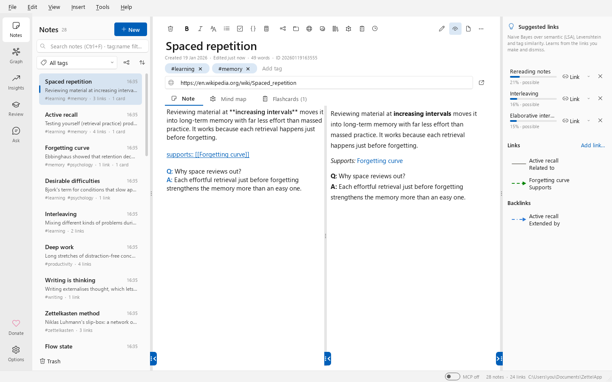

Getting started
Install
ZettelApp runs on Windows 10 (21H2 or later), Windows 11, and recent 64-bit Linux desktops. Download it from the latest release.
Windows
| Download | Use it when |
|---|---|
ZettelApp-Setup.exe |
You want a normal installation with a Start menu entry, an uninstaller in Settings ▸ Apps, and zettelapp:// links that open notes from Anki. No administrator rights are needed: it installs for your account only. |
ZettelApp-Portable.zip |
You can't install software, or you want to run it from a USB drive. Unzip it anywhere and run ZettelApp.exe. |
The installer asks which language to use and suggests your Windows display language. The installer and the app are translated into 11 languages; change the app's language in Options.
Each release lists SHA-256 checksums (SHA256SUMS.txt). To check a download in PowerShell:
Get-FileHash .\ZettelApp-Setup.exe -Algorithm SHA256
Linux
| Download | Use it when |
|---|---|
ZettelApp-Linux-amd64.deb |
Debian, Ubuntu, Mint or another .deb-based distribution. Install it with sudo apt install ./ZettelApp-Linux-amd64.deb, or open it in your software centre. |
ZettelApp-Linux-x86_64.tar.gz |
Any other distribution, or no installation: unpack it anywhere and run ZettelApp/zettelapp. |
ZettelApp-Linux-x86_64.flatpak |
If you use Flatpak: flatpak install --user ./ZettelApp-Linux-x86_64.flatpak (the runtime comes from Flathub). |
zettelapp (Snap) |
From the Snap Store: sudo snap install zettelapp. |
Both bundle Python and Qt; they need a 64-bit desktop (X11 or Wayland — GNOME, KDE and others) with its standard graphics libraries. To check a download in a terminal:
sha256sum ZettelApp-Linux-amd64.deb
The app and its documentation are translated into 11 languages; change the app's language in Options.
API keys are stored in the Secret Service (GNOME Keyring or KWallet); without a keyring they are kept
in memory only. zettelapp:// links from Anki cards open notes out of the box with the .deb; other
installs set the handler up from Options ▸ Desktop integration. A Flatpak manifest and a Snap recipe
live in the repository (packaging/), with store listings planned.
"Windows protected your PC"
Builds are not code-signed yet, so Microsoft Defender SmartScreen may warn the first time you run the installer. If you downloaded it from the official release page and the checksum matches, choose More info ▸ Run anyway. Code signing is on the roadmap.
Your first vault
A vault is a folder holding your notes: a database file (zettel.db) and an assets folder for images.
On first start ZettelApp creates one in Documents\ZettelApp (Windows) or ~/Documents/ZettelApp
(Linux) with eleven linked starter notes. The
Welcome to ZettelApp note leads through links, tags, images, mind maps, flashcards and the rest of the app. An
optional ten-minute adventure offers the same tour through real actions. New vaults created with
File ▸ New Vault… or File ▸ Open Vault… receive the same starter material, so you can work elsewhere,
for example in a OneDrive folder.
File ▸ Open Recent lists the vaults you used last.
Notes save automatically as you type. There is no Save button.
A tour of the window

The navigation rail on the left switches between pages (Ctrl+1 to Ctrl+5):
- Notes: the note list, the editor and a side panel.
- The list has search (
tag:namefilters work too), a tag filter, sorting and the Trash. - The editor has the title, tags, an optional source link, and tabs for the Note (Markdown, with Edit, Split and Preview modes), its Mind map and its Flashcards.
- The side panel shows Suggested links, the note's Links and its Backlinks.
- The list has search (
- Graph: your notes as a network in 2D or 3D, coloured by tag or by topic cluster.
- Insights: statistics and charts about your vault.
- Review: spaced-repetition reviews, quizzes and Anki.
- Ask: ask questions about your notes using an AI provider of your choice (optional).
Options (bottom of the rail, or Tools ▸ Options…, Ctrl+,) holds the preferences: theme, editor text size, link suggestions, link types, AI, MCP server, Anki, Zotero, Desktop integration and backups.
The app follows your system light/dark setting and accent colour (Windows, GNOME and KDE). You can force a theme in View ▸ Theme.
Change the accent colour while the app is open and it follows at once.
Black (OLED) is the dark theme on true black, for OLED screens. In Options ▸ General you can choose your own primary colour (buttons and other accents), secondary colour (links), highlight colour (selected text and find matches) and text colour; Use the theme's colour puts one back.
Updates
About four seconds after it starts, ZettelApp makes one HTTPS request to
https://dutrairs.github.io/ZettelApp/version.json to learn the newest version. It sends nothing else
(only a ZettelApp/<version> user-agent), and if the request fails you won't see anything. When a newer
version exists, a small notice appears in the lower-right corner, at most once per version. It never
takes focus. Download opens the releases page in your browser, ✕ closes the notice, and
Don't check for updates turns checking off. You can turn it back on in
Tools ▸ Options ▸ General ▸ Check for updates when ZettelApp starts. ZettelApp never installs
anything by itself.
Uninstalling
On Windows, uninstall from Windows Settings ▸ Apps ▸ Installed apps ▸ ZettelApp ▸ Uninstall. After you confirm, a dialog offers
an unticked Also delete my ZettelApp settings and data option. It removes your settings, saved API
keys, logs, cache and automatic backups (%LOCALAPPDATA%\ZettelApp) and all your notes (the database
and attachments of your vaults). Leave it unticked to keep your notes. For the portable version, delete its folder. On Linux, remove
the package (sudo apt remove zettelapp, or uninstall it in your software centre); your notes and your
settings in ~/.config/ZettelApp stay unless you delete them yourself.
Next steps
- Learn the note syntax in Notes and links.
- Read how link suggestions work.
- Press F1 at any time to open this documentation, or see the keyboard shortcuts.